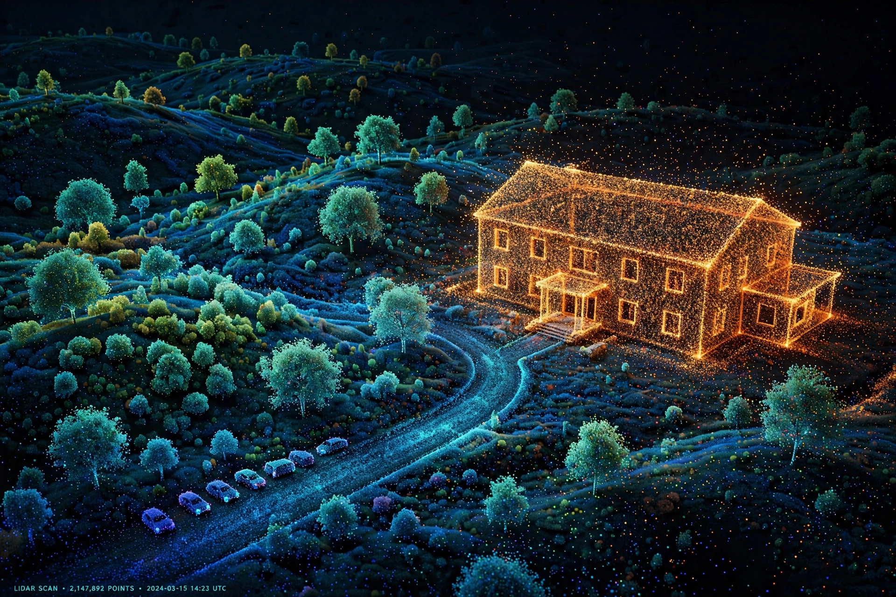

A point cloud is a discrete set of data points in space representing a 3D shape or object. Each point has coordinates (X, Y, Z) and may carry attributes such as colour, intensity or normals.
| Point cloud | |
|---|---|
 |
Point clouds are produced by lidar, structured-light and stereo scanners, photogrammetry, and time-of-flight cameras. They are used to create meshes and CAD models.
Used in surveying, archaeology, architecture (BIM), autonomous vehicles, robotics, forestry, virtual reality and quality inspection.
Common formats include PLY, LAS/LAZ, E57 and XYZ. Processing includes registration, segmentation, denoising and surface reconstruction.